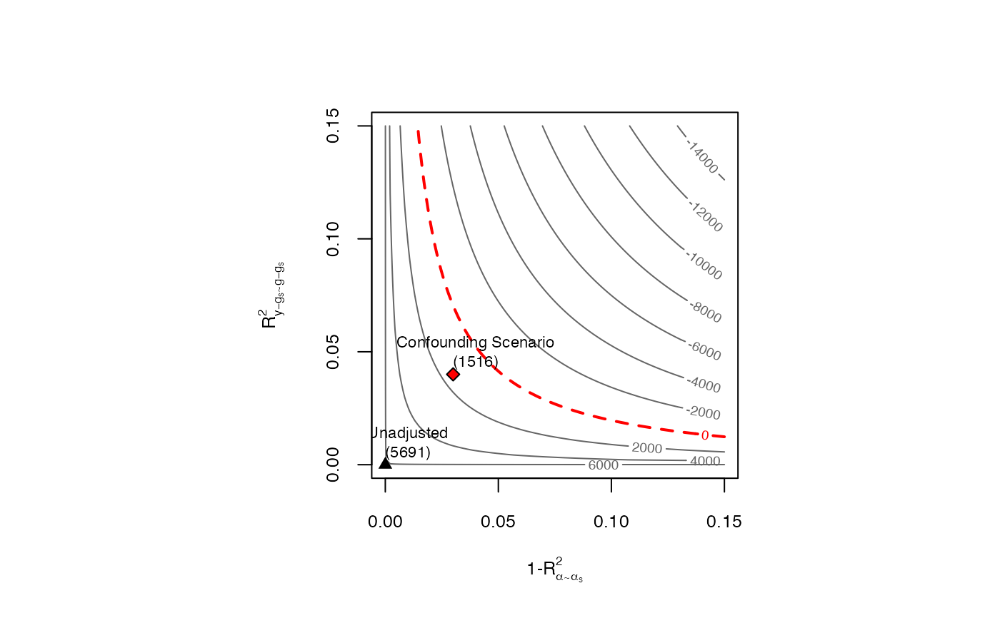

This function performs sensitivity analysis of causal effect estimates as discussed in Chernozhukov et al (2026).
The main input is an object of class dml. It returns an object of class dml.sensemakr with several pre-computed sensitivity statistics for reporting. After running sensemakr you may directly use the plot, print and summary methods in the returned object.
sensemakr(model, ...)
# S3 method for class 'dml'
sensemakr(
model,
benchmark_covariates = NULL,
cf.y = NULL,
cf.d = cf.y,
rho2 = 1,
bound_label = "Confounding Scenario",
theta = 0,
alpha = 0.05,
...
)a model created with the function dml.
arguments passed to other methods.
character vector of the names of covariates that will be used to bound the plausible strength of the latent variables.
(optional) R2 based strength of confounding in the outcome regression. It corresponds to the parameter R^2_{y-g_s ~ g-g_s} in Chernozhukov et al (2026). Generally, it is equal by the (nonparametric) partial R2 of the confounders with the outcome. Default is NULL.
(optional) R2 based strength of confounding in the Riesz representer (RR). It corresponds to the parameter 1-R^2_{alpha ~ alpha_s} in Chernozhukov et al (2026). It quantifies how much variation latent variables create in the RR. This interpretation can be refined for specific cases. For instance, if the target is the ATE in a partially linear model, this quantity reduces to the (nonparametric) partial R2 of the confounders with the treatment. If the target is the ATE in a nonparametric model with a binary treatment, this quantity reduces to the gains in precision in the treatment model due to latent variables.
degree of adversity. Default is rho2 = 1, which assumes the maximum degree of adversity.
label to bounds provided manually in cf.y and cf.d.
null hypothesis.
significance level.
An object of class dml.sensemakr, containing sensitivity analysis results.
# loads package
library(dml.sensemakr)
# loads data
data("pension")
# set treatment, outcome and covariates
y <- pension$net_tfa # net total financial assets
d <- pension$e401 # 401K eligibility
x <- model.matrix(~ -1 + age + inc + educ+ fsize + marr + twoearn + pira + hown, data = pension)
# run DML (nonparametric model)
dml.401k <- dml(y, d, x, model = "npm")
#> Debiased Machine Learning
#>
#> Model: Nonparametric
#> Target: ate
#> Cross-Fitting: 5 folds, 1 reps
#> ML Method: outcome (yreg0:ranger, yreg1:ranger), treatment (ranger)
#> Tuning: dirty
#>
#>
#> ====================================
#> Tuning parameters using all the data
#> ====================================
#>
#> - Tuning Model for D.
#> -- Best Tune:
#> mtry min.node.size splitrule
#> 1 2 5 variance
#>
#> - Tuning Model for Y (non-parametric).
#> -- Best Tune:
#> mtry min.node.size splitrule
#> 1 2 5 variance
#> mtry min.node.size splitrule
#> 1 2 5 variance
#>
#>
#> ======================================
#> Repeating 5-fold cross-fitting 1 times
#> ======================================
#>
#> -- Rep 1 -- Folds: 1 2 3 4 5
#>
# sensitivity analysis
sens.401k <- sensemakr(dml.401k, cf.y = 0.04, cf.d = 0.03)
# summary
summary(sens.401k)
#> ==== Original Analysis ====
#>
#> Debiased Machine Learning
#>
#> Model: Nonparametric
#> Cross-Fitting: 5 folds, 1 reps
#> ML Method: outcome (yreg0:ranger, yreg1:ranger, R2 = 27.466%), treatment (ranger, R2 = 11.327%)
#> Tuning: dirty
#>
#> Average Treatment Effect:
#>
#> Estimate Std. Error t value P(>|t|)
#> ate.all 7927 1141 6.949 3.69e-12 ***
#> ---
#> Signif. codes: 0 ‘***’ 0.001 ‘**’ 0.01 ‘*’ 0.05 ‘.’ 0.1 ‘ ’ 1
#> Note: DML estimates combined using the median method.
#>
#> Verbal interpretation of DML procedure:
#>
#> -- Average treatment effects were estimated using DML with 5-fold cross-fitting. In order to reduce the variance that stems from sample splitting, we repeated the procedure 1 times. Estimates are combined using the median as the final estimate, incorporating variation across experiments into the standard error as described in Chernozhukov et al. (2018). The outcome regression uses from the R package ; the treatment regression uses Random Forest from the R package ranger.
#>
#> ==== Sensitivity Analysis ====
#>
#> Null hypothesis: theta = 0
#> Signif. level: alpha = 0.05
#>
#> Robustness Values:
#> RV (%) RVa (%)
#> ate.all 6.0485 4.56
#>
#> Verbal interpretation of robustness values:
#>
#> -- Robustness Value for the Bound (RV): omitted variables that explain more than RV% of the residual variation of the outcome (cf.y) and generate an additional RV% of variation on the Riesz Representer (cf.d) are sufficiently strong to make the estimated bounds include 0. Conversely, omitted variables that do not explain more than RV% of the residual variation of the outcome nor generate an additional RV% of variation on the Riesz Representer are not sufficiently strong to do so.
#>
#> -- Robustness Value for the Confidence Bound (RVa): omitted variables that explain more than RV% of the residual variation of the outcome (cf.y) and generate an additional RV% of variation on the Riesz Representer (cf.d) are sufficiently strong to make the confidence bounds include 0, at the significance level of alpha = 0.05. Conversely, omitted variables that do not explain more than RV% of the residual variation of the outcome nor generate an additional RV% of variation on the Riesz Representer are not sufficiently strong to do so.
#>
#> The interpretation of sensitivity parameters can be further refined for each target quantity. See more below.
#>
#> Confidence Bounds for Sensitivity Scenario:
#> lwr upr
#> ate.all 1516.386 14366.378
#>
#> Confidence level: point = 95%; region = 90%.
#> Sensitivity parameters: cf.y = 0.04; cf.d = 0.03; rho2 = 1.
#>
#> Verbal interpretation of confidence bounds:
#>
#> -- The table shows the lower (lwr) and upper (upr) limits of the confidence bounds on the target quantity, considering omitted variables with postulated sensitivity parameters cf.y, cf.d and rho2. The confidence level "point" is the relevant coverage for most use cases, and stands for the coverage rate for the true target quantity. The confidence level "region" stands for the coverage rate of the true bounds.
#>
#> Interpretation of sensitivity parameters:
#>
#> -- cf.y: percentage of the residual variation of the outcome explained by latent variables.
#> -- cf.d: percentage gains in the variation of the Riesz Representer generated by latent variables:
#> ATE: cf.d measures the percentage gains in the average precision on the treatment regression.
# contour plots
plot(sens.401k)
